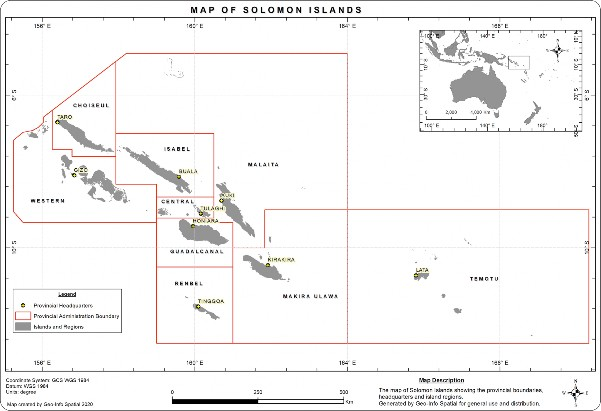

Ministry of Environment, Climate Change, Disaster Management and Meteorology Honiara, Solomon Islands
Acknowledgment
Funding of the NDC update was provided by the European Union, through the Intra-ACP GCCA+ Pacific Adaptation to Climate Change and Resilience Building (PACRES) project1 with assistance from the Secretariat of the Pacific Regional Environment Programme.
Solomon Islands ratified the Paris Agreement in 2016 with a strong call to pursue efforts to limit the global average temperature increase to 1.5oC above pre-industrial levels if it is to withstand the risks and impacts posed by climate change.
In this revised Nationally Determined Contribution (NDC), Solomon Islands has increased its emission ambition by targeting a net zero emission by 2050 as compared to 45% emission reduction by 2050 in its initial NDC. Solomon Islands has also included Adaptation in its revised NDC because mitigation and adaptation are inseparable for a low emitting, highly vulnerable and small island developing country. What is also clear is the need for predictable, dedicated and low cost financial resources, and technical support to meet our ambitious targets in mitigation, and address the negative impacts of climate change, and achieve sustainable development.
In its effort to achieve its long term mitigation targets, Solomon Islands is embarking on applying renewable energy and energy efficient technologies in the energy sector; in short we are committed to low-carbon technologies to support sustainable development. This includes electricity generation through the application of Solar PV and hydro-power and other clean technologies in both urban and rural areas of the country. We will also promote renewable energy and energy efficient technologies in the sea and land transport sub-sectors. In addition, another priority mitigation area that the country will embark on is enhancing its carbon sink through sustainable management and protection of its forestry, land use, coastal and marine ecosystems.
On adaptation, the Solomon Islands takes adaptation as a matter of survival and not just an option. Short to medium term adaptation priorities are set out in the country’s National Adaptation Programme of Action and long-term adaptation plans will be captured in our new National Adaptation Plan. However, relocation of communities in low-lying and artificial islands must be supported now rather than later.
Solomon Islands is serious in meeting its mitigation targets as a moral contribution towards the goal of the Paris Agreement. It is also aware that its emission are insignificant globally, and hence continues to call on bigger emitters to drastically and immediately reduce their emissions to keep global temperature rise below 1.5oC.
....................................................
Honourable Titus Fika, MP
Minister
Ministry of Environment, Climate Change, Disaster Management and Meteorology
Solomon Islands submitted its Intended Nationally Determined Contribution (INDC) to the secretariat of the United Nations Framework Convention on Climate Change (UNFCCC), in accordance with decision 1/CP.20 (Lima Action Plan), on September 30 2015, prior to the twenty-first session of the Conference of the Parties (COP21). Following the ratification of the Paris Agreement the INDC was converted to Nationally Determined Contribution (NDC) and submitted to the UNFCCC secretariat on 21 September 2016.
In its first NDC, Solomon Islands has committed to reduce emissions by 12% below 2015 level by 2025 and 30% below 2015 level by 2030 compared to a business-as-usual projection (BaU). However, with international assistance Solomon Islands can further reduce its emissions by 27% by 2025; and 45% by 2030. This would make the overall reduction by Solomon Islands by more than 50% by 2050. The Solomon Islands holds the view that it is major emitters that need to drastically reduce their emissions if the globe is have any chance to keeping warming below 1.50 degrees Celsius. Our emission reduction efforts even though they are already ambitious will only be as effective as major emitters take tangible and drastic actions to reduce their emissions.
In addition to the carbon storage in the forest, coastal and marine ecosystems Solomon Islands unconditional contribution will reduce 8,300 tCO2e annually and the conditional contribution will reduce emissions by 2025, and by 31,125 tCO2e annually by 2030. Approximately 90% of the emission reductions will come from fossil fuel use and forest carbon sequestration.
In accordance with decision CP.21, paragraphs 23 and 24, of the Conference of the Parties (COP) of the United Nations Framework Convention on Climate Change (UNFCCC) and Article 4 of the Paris Agreement, Solomon Islands will review and/or update its NDC with a view to making a progression beyond its current NDC. The revision or update of the NDC highlights its mitigation contribution with more ambitious long-term and clear adaptation targets to ensure resilience of its communities and ecosystems now and in the future.
Since 2015, the Solomon Islands Government (SIG) has embarked on a number of actions which resulted in increased use of renewable energy technologies, improved energy security and reductions in greenhouse gas emissions. These technologies include the use of solar photovoltaic farming and hydropower generation. SIG has now planned to roll out more of these renewable energy technologies over the next few years. Thus, its mitigation contribution could be even bigger if there had been substantial financial resources, technology and capacity building support from multilateral and bilateral partners.
SIG was not able to achieve the following from its INDC/NDC:
New GHG inventory for 2011-2019 as there is no Third National Communication (TNC) and Biennial Update Reports (BUR)2
Establishment of national climate change trust fund
Quantification of carbon sequestration from above 400m contour
Mitigation actions of sea and land transport sectors
Fiu Hydropower3, solar homes, mini hydro and energy usage as conditional contribution
Six planned hydropower systems are now included in Table 3
Afio solar PV, Kakabona solar PV and Savo Geothermal are now included in Table 3.
Adaptation - The main achievement on adaptation is that the Ministry of Environment, Climate Change, Disaster Management and Meteorology (MECDM) is able to ensure that all projects funded by external sources support the implementation of NAPA, community adaptation programmes and mitigation measures. However, there are other actions that have not been implemented:
Adaptation knowledge sharing, coordination and collaboration among Ministries, NGOs, private sector, faith based organisations and development partners is lacking
Development of knowledge and skills to address capacity gaps relating to climate change adaptation and disaster risk reduction.
Cost $126,6560,000 for adaptation (NAPA, National Communication Process)
Community based vulnerability mapping, adaptation planning and management approaches to community- based adaptation projects on a whole of island basis.
Establishment of institutional structures and strengthen capacities at the community level to support country wide implementation of community-based vulnerability mapping and adaptation planning
Setting aside value added tax charged for fuel
Charging carbon levies,
Charging fees for climate change research in the country
Funding of national climate change trust fund for priority climate change measures
Assistance from GCF Readiness programme to establish the necessary legal, institutional and fiduciary management framework and accredit the national implementing entity.
Improving donor coordination on climate change adaptation and mitigation programming and improved coordination between relevant government agencies
Effective implementation is conditional on and will depend on accessibility, availability and timely provision of financial resources, technology and capacity building support.
Intent of the government to increase use of RETs, improving energy security and reducing GHG emissions
The main focus still remains achieving adequate adaption to climate change and sustainable development goals
The Solomon Islands comprises a scattered archipelago of 994 islands combining mountainous islands as well as low lying coral atolls within a tuna-rich and potentially mineral-rich maritime Economic Exclusive Zone (EEZ) of 1.34 million square kilometres. The land area of 28,896 square kilometres with 4,023 kilometres of coastline is the second largest in the Pacific after Papua New Guinea.
There are six main islands, Choiseul, New Georgia, Santa Isabel, Malaita, Guadalcanal and Makira, which are characterized by a rugged and mountainous landscape of volcanic origin. Between and beyond the bigger islands are hundreds of smaller volcanic islands and low lying coral atolls. All of the mountainous islands of volcanic origin are forested with many coastal areas surrounded by fringing reefs and lagoons. More than 300 of the 994 islands are inhabited.

Figure 1. Map of Solomon Islands
The islands are grouped into three different major „geological provinces; the Pacific Geological Province (including Malaita, Ulawa and North Eastern part of Santa Isabel Island); Central Geological Province (Makira, Guadalcanal and the Florida Islands, Southwestern part of Isabel and Choiseul) and; the Volcanic Geological Province (New Georgia, Russell Islands, Shortland Islands and North Western tip of Guadalcanal and Savo). Guadalcanal is the largest of the bigger islands and the only one in the Solomon Islands with a significant area of grassland and rich alluvium soils. Most of the islands have highly weathered soils of low fertility with pockets of fertile areas mainly on volcanic islands and river valleys.
The country’s location within the earthquake belt or” Ring of Fire‟ results in frequent earthquakes and the geology, topography and rainfall of the country results in being extremely vulnerable to the effects and impacts of earthquakes, tsunamis and landslips. A major earthquake measuring 8.1 on the Richter scale occurred in the Western Province in 2007 causing a major tsunami that affected the Western and Choiseul provinces and causing 52 deaths and scores missing. About 40,000 people were affected. Many islands have subsided whilst a few have been uplifted a few metres. Extensive damage was experienced throughout the two provinces costing hundreds of millions of Solomon Island dollars. The country and many communities and individuals are still recovering from this double disaster event.
27 degrees Celsius. There are two distinct seasons: a wet season from November to April and a dry season from May to October. The temperatures are strongly tied to changes in the surrounding ocean temperature. Warmest months are January, February, April, May, October, November and December (31°C). Months with the lowest average temperature are July and August (29°C).
The weather and climate is determined by the seasonal movement and development of the equatorial trough; a belt of low pressure that migrates between hemispheres following the apparent movement of the sun, and the subtropical ridge of the southern hemisphere (a belt of high pressure typically located at about latitude 30 to 35 degrees south). During January to March the equatorial trough is usually found close to, or south of the Solomon Islands, and this is a period of West to North-westerly monsoonal winds (National Meteorological Services, 2018). The heaviest rainfall at most places occurs at this time. The equatorial trough is in the Northern hemisphere from May to October and the Islands in the north experience stronger and more persistent Southeast trade wind blowing from the subtropical ridge towards the equatorial trough. These winds are moisture bearing resulting in heavy rainfalls during the South-easterlies on the windward side of most large islands.
The average annual rainfall ranges from 3000 to 5000 millimeters with the majority of monthly rainfall exceeding 200 millimeters. The wettest months are during the Northwest monsoon season, with a tendency for reduced amounts during February when the equatorial trough is normally furthest south. Places on the southern sides of the larger islands also tend to have a rainfall maximum between June and September.
Orography plays an important role in rainfall distribution within and among islands. Depending on the local topography, rainfall could be expected to increase with elevation with a maximum at about 600-1000 metres above sea level on windward slopes. The heaviest average yearly rainfall could reach 9000mm at some elevated sites. The extreme falls often occur between the months of December to April when the equatorial trough migrates across the islands. Heavy daily falls can also occur during the South-easterly season at places well exposed to the prevailing wind.
The provisional 2019 census registered a population of 721,455 in Solomon Islands, with national population density of 24 persons per km-2. Malaita Province had the highest number of people (173,347) and Renbel Province had the lowest number of people (4,091). There were 369,252 males and 352,204 females. With an annual growth rate of 2.7% the largest number of people were from the 0-5-year age group and the lowest number was from 80 years and over age group highlighting Solomon Islands as a predominantly young population.
Solomon Islanders make up a diverse population of Melanesians (80%), Polynesians (5%) and Micronesians (5%). Ninety five different languages are spoken including ninety Melanesian, four Polynesian and the Kiribati language spoken by descendants of Kiribati people brought to the Solomon Islands by British colonial government in the 1950‟s. About 80% of the population live in rural areas and continue to rely on the subsistence economy with supplementary income from agriculture, forestry and fishery and remittances from relatives working off-island. Around 80% of the national population live on low lying coastal areas. The capital city of Honiara is the major area of economic activity and attracts increasing numbers of youth and adults from other islands seeking employment and income.
Solomon Islands’ economy is based on agriculture, forestry and fisheries, which together account for around 40 per cent of gross domestic product (GDP) and provide employment for the majority of the the population. The GDP was estimated to be US$1.37 billion and an estimated GDP per capita of US$2,339.55 (World Bank 2017).
Log exports account for 71% of export value and approximately 20% of all Government revenue in 2018, having provided approximately 10,000 jobs ((Kiddle, et. al. 2019) Currently logging contributes 17% to the GDP and in terms of export value, timber exported as logs amount to 72% (~US$ 405 million) of total exports, fisheries 11% (~US$ 64.7 million), agriculture 8% (~US$ 46.9 million), minerals 7% (~US$ 40.3 million), with the rest accounted for by sawn timber and re-exports (World Bank, 2020). Thus, forest use and management will remain a central focus of development in Solomon Islands in the foreseeable future.
According to the Central Bank of Solomon Islands (CBSI) the economy was projected to grow by 3.7% in 2019 with the assumption that forestry will finally decelerate as part of the government’s forestry sustainability initiatives. However, there has been a slowdown in the Solomon Islands economy in 2019 due to low demand and slower domestic activity (CBSI 2020). This led to a real GDP growth of 1.2% from 3.9% in 2018. The muted economic performance in 2019 was most pronounced in agriculture and forestry which are the two largest contributors to rural incomes and government revenue. The downturn was a result of a fall in the primary sector that accounted for -0.4%, as export prices declined for the country’s key commodities.
The secondary sector contributed also fell to a flat 0.6%, while services only accounted for 1.1% of the real GDP growth during the year again resulting from the declines in the production of the country’s key primary commodities while there have been increases in fish catch and cocoa. Logs, palm oil, copra and coconut oil fell by 2.4%, 1.3%, 59.0% and 15.1%, respectively (CBSI 2020). These falls have led to a net deficit of $292 million balance of payments in 2019, from the $527 million net surplus in 2018. This sharp decrease emanated from the fall in exports of round logs and agriculture, and an increase in service payments that led to a wider current account deficit of $1,167 million.
The economic growth outlook for the global economy in 2020 is grim with an anticipated slide to a global recession of -3% as a result of the effects of, and uncertainties surrounding the duration and spread of the coronavirus (Covid-19) pandemic. The outlook for Solomon Islands economic growth is projected to tilt downward to between -3% and -5% in 2020 if the effects of Covid-19 persist throughout the year. Sectors that are expected to drive the fall in growth are forestry, tourism, transport, manufacturing, education and government services, while national projects could also be delayed due to restrictions of movement of people. Fisheries and palm oil are expected to have the least negative impact, as their production would remain uninterrupted unless the pandemic were to affect workers at their respective sites.
Thus Solomon Islands will have to deal with COVID-19 downside risk by introducing the Government’s stimulus measures that are able to sustain key economic sectors and continue to support public health activities, and work with other stakeholders including development partners to minimize the effects the crisis may have on affected workers and firms. In the aftermath of the crisis, the implementation of the stimulus package should continue to be rolled out to help restart the economy. Moreover, the country needs to build up its resilience buffers, through rainy-day funds, institutional policy measures and a broader economic base to cushion future shocks.
As with other Small Island developing States, Solomon Islands energy sector remains a largest contributor to greenhouse gas emissions as well as being considered a key enabling factor that will support efforts in poverty alleviation, access to better health care and education services, and improvement of the standard of living and livelihood of communities. However, access to affordable energy has been very challenging in the Solomon Islands due to the widely scattered market on islands that are separated by large areas of sea and with small, isolated communities.
Given this backdrop energy policy changes were brought in by the Government to increase energy access, private sector participation and foreign investment, and to create fiscal incentives for improving energy access, efficiency and activities that will contribute to expanding the economic base. Solomon Islands has the potential to increase electricity access and use through renewable energy resources and technologies to 100% by 2050. However, increasing the use of these renewable energy resources presents challenges; including a lack of enabling environments to foster private investment in the electricity sector and the need to improve funding opportunities (through consolidating funding proposals) and support to assist the Solomon Islands Energy Authority and the Energy Division in expanding energy access in both urban and rural areas. The 2014 Solomon Islands National Energy Policy will provide an enabling platform that will inform decision makers on policy directions and strategies for improving the effectiveness of the Solomon Island energy sector and achieving the NDS 2011–2020 through increased access to reliable, affordable and clean sources of electricity.
The second national communication prepared by Solomon Islands (MECDM 2016) showed that the energy sector emissions of greenhouse gases increased steadily in the Solomon Islands between 1994 and 2010. There appears to be a 48% increase in GHG emissions over a 16 -year period from 1994 to 2010 in the Solomon Islands. This equates to an average increase of GHG emissions by 74,302 tonnes CO2e per year between inventory years (1994-2010). This indicates that Solomon Islands will experience a growth in emissions in the foreseeable future.
Business as Usual (BaU) Projection (based on extrapolation 1994-2010 emissions), indicate an increase in GHG emissions to 707,425 tCO2e in 2015; 805,900 tCO2e in 2020, 904,375 tCO2e in 2025; and 1,002,850 tCO2e in 2030 in Solomon Islands. These projections will be reviewed when the Third National Communication and Biennial Update reports are completed for Solomon Islands before 2025.
The National Climate Change Policy 2012-2017 (MECDM 2011) outlined the policy directives and strategies of the Solomon Islands government relating to mitigation of climate change. In policy directives and strategies of mitigation (Policy 8.4) “Solomon Islands will continue to exhort Annex-1 countries to reduce their GHG emissions. On its part the government is committed to carrying out its own inventory of emissions and pursue low emissions development to reduce its own GHG emissions through use of renewable energy and other mitigation technologies that brings benefits to the country’s economy, environment and improves the livelihoods of its people”. To achieve this the government shall:
Build capacity of Government, private sector and other relevant institutions to undertake regular inventory of GHG emissions and sinks (removals), monitor emissions and removals, establish the national carbon balance and prioritize emission reduction strategies and actions.
Build capacity of National, Provincial and Honiara City Council and other urban areas to transition to low carbon development pathway.
Strengthen capacity of Government, private sector and other relevant institutions for the implementation of the national Renewable Energy Policy Framework and develop and implement renewable energy strategies for Honiara city and Provinces, with measurable targets.
Strengthen capacity of the Climate Change lead agency as the Designated National Authority for climate change activities relating to Warsaw Framework for REDD+; Article 6 of the Paris Agreement; regulate carbon trade, build capacity of national stakeholders to design and implement carbon projects; raise awareness and develop carbon trading legislation.
Ensure resource owners maximize benefits from carbon trading arrangements by immediately raising awareness on carbon trade in the forest sector and establish procedures for assessing investors and carbon trading arrangements between investors and communities as an interim measure, prior to the enactment of carbon trading legislation and regulatory framework.
Strengthen capacity of Ministry of Forest and Research to support forest resource owners implement sustainable forest management and forest carbon assessments for effective monitoring, reporting and verification under carbon trading regime.
Strengthen capacity of Ministry of Mines, Energy and Rural Electrification and Ministry of Agriculture and Livestock Development to support resource owners implement carbon assessments and carbon trading through agriculture mitigation and renewable energy programs.
Integrate gender analysis and gender considerations in planning and implementation of mitigation actions.
MITIGATION CONTRIBUTION |
|
|
PARTY: Solomon Islands |
DATE: March 2020 |
|
Parameter |
Information |
|
Period of defining actions |
Five-year periods starting 2020, with reference to 2025 and ending in 2030 |
|
Type and Level of Commitment |
All commitments are premised on:
Solomon Islands is a growing small island developing State, with particular needs and priorities for sustainable development. Despite its status as a low emitting least developed country, Solomon Islands will nonetheless, commit to reduce its emissions by 14% by 2025 below 2015 and by 33% below 2015 by 2030 compared to a business-as-usual projection. If and when Paris Agreement addresses international assistance to access financial and technical resources, Solomon Islands can, with international assistance, contribute:
With appropriate international assistance, Solomon Islands can achieve net zero emissions by 2050. |
|
Reference year or period |
2015. The BaU projection is based on an extrapolation of historic data covering the period 1994-2010. |
|
Estimated quantified emissions impact |
In addition to the carbon storage in the forest, coastal and marine ecosystem, Solomon Islands unconditional contribution will reduce emissions by 6,770.8 tCO2e annually. Solomon Islands' conditional contribution (with international assistance) will reduce emissions by 55,347.31 tCO2e annually by 2025, and by 246,793.73 tCO2e annually by 2030. |
|
Coverage |
% National Emissions |
NDC covers combustion of fossil fuels and forest carbon sequestration. Fossil-fuel use covers more than 95% of reported national inventory. |
|
Sectors |
Energy: Greenhouse gas emissions are a result of combustion of imported fossil fuels in the energy sector: Electricity generation (39%) and Transport (sea and land transport – 61%)). Agriculture, Forestry and Land Use (AFOLU), and Coastal and Marine ecosystems. |
|
|
Gases |
Carbon dioxide only (more than 95% of inventory) |
|
|
Geographical boundaries |
Whole of Country |
|
|
Further information, relevant to commitment type |
Commitments are in the form of Outcomes and Actions. These are referenced as deviation from business-as-usual projections. BaU projections are based on fossil fuel consumption data for the period 1994-2010, with line of best fit extrapolation to 2030. |
|
|
Intention to use market-based mechanism to meet commitments |
Solomon Islands will consider other avenues as well as market-based mechanisms to support establishment and operation of a National Climate Change Trust Fund. Solomon Islands intends to use the market and non-market mechanisms under Article 6 of the Paris Agreement. |
|
|
Land sector accounting approach |
Appropriate methodologies drawn from international best practice to quantify carbon from agriculture, forestry and land use (AFOLU) and coastal and marine ecosystems. |
|
|
Estimated macro-economic impact and marginal cost of abatement |
NE |
|
|
Narrative supporting the fair-share assessment of the contribution. |
Solomon Islands is a double chain archipelago of small islands with more than 900 volcanic, coral islands and atolls with 680,806 inhabitants, small land mass, limited technological, technical, financial and human resources and a small economy. Solomon Islands is a growing LDC SIDS that in no way is responsible for the unfolding climate change catastrophe, yet it is highly vulnerable to adverse impacts of climate change. Greenhouse gas emissions from Solomon Islands in 2015 were estimated to be approximately 20MtCO2e/year (13MtCO2e from AFOLU). This is extremely small, representing approximately less than 0.01% of the global emissions. Solomon Islands has very low per capita emissions rate, at just 1.2tCO2 per person in 2015 based on projected emissions for 2015. This is 14 times less than the average per capita emissions for Australia (16.5 tCO2/capita) and less than the estimated level required to stay below 1.5oC (as compared to 2.0oC) of warming, of around 1.5 tCO2e/capita. Thus, any contribution from Solomon Islands is more than fair, and is highly ambitious, given Solomon Islands' national circumstances. Even with high vulnerability to adverse impacts of climate change, Solomon Islands, has placed equal importance to mitigation of and adaptation to climate change and recognizes the need for developing a low carbon economy to achieve its sustainable development objectives. |
|
Focus of the Solomon Islands Government (SIG) is on increasing affordability (or reduce reliance on diesel) and increasing accessibility to electricity to achieve 100% by 2050 (MERE 2014) Currently, renewable energy plants produce 1.6 megawatts (MW) comprising Two (2) Solar Hybrid Systems; Two (2) grid-connect Solar Systems and One (1) Hydro-Diesel Power Station. Solar Hybrid systems include 224 kilowatts (kW) solar farm in Taro, Choiseul; 168kW solar farm in Seghe, Marovo; and two grid-connected solar farms in Honiara grid: 1000kW solar farm at Henderson, and 50kW at Ranadi HQ, Honiara. Hydropower 150kW hydro generator in Buala, Isabel Province and Selwyn College 160kW.
Since the first NDC submitted by SIG there has been no new National Greenhouse Gas Inventory undertaken in Solomon Islands. It was expected that the Third National Communication project would facilitate the compilation of the national GHG inventory but due to delays in funding of the TNC the new GHG inventory has not been developed. Thus, for this review the GHG inventory data published in the Second National Communication was used again for baseline projection of GHG emissions in the energy sector.
However, the only new published GHG data compiled during the last five years has been from the forestry sector. Thus, a forest reference level (FRL) was developed and submitted to the UNFCCC secretariat in 2019. In respect of mitigation in the transport sector there is currently no clear plans to address land and marine transport. It is expected that the Third National Communication project and biennial update report
GHG emissions reductions are currently being achieved through the development of renewable energy projects in the Solomon Islands. The impetus for the renewable energy projects is provided by SIG National Energy Policy 2014, which is aimed at increasing access to reliable, affordable and clean sources of electricity through renewable energy resources and technologies to 100% by 2050. In order to achieve this goal, the SIG has embarked on a number of renewable energy projects that will be implemented over the next years. Thus, the focus of the renewable energy generation of electricity will be through the use of solar PV and hydropower generation.
These solar hybrid, grid-connect solar farms and a hydro-diesel power station are contributing to GHG emission reductions: at Taro Hybrid farm- 155 tCO2e; Seghe Hybrid farm- 35 tCO2e; Henderson 1 MW solar farm - 800 tCO2e; Ranadi solar installation - 33 t CO2e and Buala mini hydro - 70 tCO2e. Thus, potentially a total of 1,093 tCO2e would be offset annually (Solomon Power 2020).
Currently, 23 MW power is produced from 14 solar hybrid systems, three grid-connect solar systems, and one hydropower station.
|
UNCONDITIONAL |
||||
|
Solar Hybrid Systems (Conversion Projects) 2020 |
||||
|
No. |
Solar Hybrid System |
Province |
Capacity (kW) |
Mitigation Potential tCO2e Annually |
|
1 |
Munda |
Western |
1,000 |
730.0 |
|
2 |
Tulagi |
Central |
250 |
182.5 |
|
3 |
Kirakira |
Makira |
300 |
219.0 |
|
4 |
Malu'u |
Malaita |
150 |
109.5 |
|
5 |
Lata |
Temotu |
300 |
219.0 |
|
Solar-Diesel Hybrid Systems 2020-2021 |
||||
|
6 |
Hauhui |
Malaita |
336 |
245.28 |
|
7 |
Sasamunga |
Choiseul |
336 |
245.28 |
|
8 |
Namugha |
Makira |
280 |
204.40 |
|
9 |
Vonunu |
Western |
252 |
183.96 |
|
10 |
Selwyn College |
Guadalcanal |
160 |
116.80 |
|
11 |
Wairokai Communi- ty High School |
Malaita |
15 |
11.0 |
|
Solar- Diesel Hybrid Systems 2021-2022 |
||||
|
12 |
Visale |
Guadalcanal |
109 |
79.57 |
|
13 |
Tingoa |
Renbel |
263 |
191.99 |
|
14 |
Bina |
Malaita |
220 |
160.6 |
|
15 |
Baolo |
Isabel |
107 |
78.11 |
|
16 |
Dalo |
Malaita |
496 |
362.08 |
|
Grid Connect Solar Farms 2020-2021 |
||||
|
17 |
Ranadi Office Rooftop Solar Farm |
220 |
160.60 |
|
|
18 |
Henderson Fighter 1 Extension Solar |
2,000 |
1,460.00 |
|
|
19 |
Tanagal Solar Farm |
1,000 |
730.00 |
|
|
Hydro-Power Station 2024 |
||||
|
20 |
Tina Hydropower station |
15,000 |
49,500.00 |
|
Solomon Islands will operate 10 hydropower stations in 2020; five are operational, two are under repair and three are being developed and are now being procured (Table 2).
|
Current Hydro-Power Stations |
||||
|
Province |
Station |
Capacity kW |
Mitigation Potential tCO2e annually |
Status |
|
Malaita |
Malu'u |
30 |
21.90 |
To be repaired |
|
Masupa |
40 |
29.20 |
To be repaired |
|
|
Manawai |
30 |
21.90 |
Operational |
|
|
Rae'ao |
30 |
21.90 |
Operational |
|
|
Nariao |
25 |
18.25 |
Operational |
|
|
Western |
Vavanga |
18 |
13.14 |
Operational |
|
Bulelewata |
45 |
32.85 |
Operational |
|
|
Palagati |
50 |
36.50 |
To be installed - Procurement |
|
|
Guadalcanal |
Fox Bay |
50 |
36.50 |
To be installed - Procurement |
|
Makira |
Naharahau |
50 |
36.50 |
To be installed - Procurement |
All solar photovoltaic systems and hydropower will be contributing to reductions in GHG emissions by 55,347.31 tCO2e annually.
Additionally, the government is planning to develop and implement three solar hybrid systems every year and more grid-connect systems in Honiara with up to 20MW over the next decade. It is currently developing concepts for two grids connected solar farms: one in Auki (Malaita Province) with 1,400kW capacity and the other in Honiara with 10,000kW capacity between 2022 and 2026. Further eight new solar hybrid systems are also being planned for Makira, Guadalcanal, Malaita and Isabel to be developed between 2022 and 2024.
The government is committed to ‘Renewable energy road map for Honiara’ to achieve 100% renewable energy by 2030 and achieving 100% accessibility by 2050.
The conditional mitigation actions will require timely combination of capacity building, technical or technology transfer and financial support, primarily in the form of grants. Additional mitigation actions will be identified in the future.
The conditional renewable energy projects are outlined in Table 3 below.
|
CONDITIONAL |
||||
|
RENEWABLE ENERGY PROJECTS |
||||
|
HYDROPOWER |
||||
|
Project |
Capacity |
Province |
Capacity (kW) |
Mitigation Potential (tCO2e) Annually |
|
Luembalele River |
190 |
1,065.22 |
750,000 |
Feasibility |
|
Huro River |
120 |
672.77 |
550,000 |
Feasibility |
|
Mase River |
1,750 |
9,811.2 |
4,000,000 |
Feasibility |
|
Sorave River |
200 |
1,121.28 |
600,000 |
Prefeasibility |
|
Rori River |
300 |
1,681.92 |
750,000 |
Feasibility |
|
Vila River |
1,210 |
6,783.74 |
4,000,000 |
Prefeasibility |
|
SOLAR GRID CONNECT |
||||
|
Kakabona Solar PV |
1000 |
1401.6 |
4,000,000 |
Feasibility |
|
OFF-GRID SOLAR –DIESEL HYBRID SYSTEMS |
||||
|
10 Boarding Schools |
1600 |
1160.8 |
6,000.000 |
Prefeasibility |
|
OFF-GRID SOLAR –DIESEL HYBRID SYSTEMS |
||||
|
Whole Country |
Various & Regulating imports of electrical appliances |
10% |
various |
Feasibility by 2035 |
|
Solomon Water seven pump stations (6 Honiara based and 1 Auki based stations) |
7617.6kWh |
325.91 |
218,982 |
Feasibility |
|
GEOTHERMAL |
||||
|
Savo Geothermal |
20,000-40,000 |
224,256.00 |
150,000,000 |
Prelim Assessment |
The government commits to increase access to electricity in rural households to 35% by 2025 and to roll out solar-diesel hybrid and battery storage plants by Solomon Power (SIEA) in large communities in the country.
Solomon Islands commits to improve energy efficiency and conservation by regulating imports of electrical appliances by 2035.
Solomon Islands contains over 89% forest cover and is therefore considered a High Forest Cover Low Deforestation Country (HFLD) with low historical but very high and steeply increasing recent forest emissions, largely as a result of growing logging industry (FRL Report 2019). The government through a FAO supported programme on reducing emissions from deforestation and degradation (REDD+) has carried out a historical forest cover change to quantify emissions and removals and developed a forest reference level (FRL). FRL sets the benchmark on which the results- based payments will be made for emission reductions from deforestation, forest degradation and carbon stock enhancement.
The FRL is based on annual assessments and datasets from a 17 years reference period that covers low historical as well as recently high forest emissions and is representative of the forest sector BaU i.e. how the pressure on forests will likely evolve without REDD+ actions from the government. In this regard, it better reflects expected future forest emissions and therefore it will be suitable benchmark to assess the impacts of national policies and measures on forest emissions.
Solomon Islands is committed to undertake a multi-purpose national forest inventory over the next few years. This will provide the basis for forest monitoring and informed decision-making to improve forest management and research. Further Solomon Islands intends to implement sustainable logging policy (Sustainable Logging Policy 2018) and quantify forest carbon sequestration and protect forest above 400-meter contour. SIG also intends to protect at least 20% of the terrestrial and inland water; 15% of coastal and marine areas enabling ecological, representative and well-connected system of protected area in the country, as provided in The National Biodiversity Strategic Action Plan 2016-2020.
The newly launched National Forestry Policy 2020 is also hoped to assist the government manage and sustain the country’s forest resources for the benefit and resilience of all Solomon Islanders. The two goals of the first strategy of the policy (Strategy 3.1. Forest Conservation Strategy) are Goal 1. Protection and conservation of biodiversity and forest ecosystems; and Goal 2. Recognition and promotion of ecosystems services for sustainable livelihood.
For Solomon Islands, as with other small islands developing States and Least Developed Countries, where climate change threatens the very existence of the people and the nation, adaptation is not an option – but rather a matter of survival.
The interannual climate of Solomon Islands is driven by the Inter-Tropical Convergence Zone (ITCZ), the South Pacific Convergence Zone (SPCZ), the West Monsoon and the El Nino Southern Oscillation (ENSO). The wet season (April-November) is also tropical cyclone season generally driven by the ITCZ and the West Monsoon resulting in strong north-westerly winds and seas affecting mostly the northern part of the country.
Observed temperature data by the Solomon Islands Meteorological Services show that annual surface temperature for the western, central and eastern regions of Solomon Islands have increased during the last 30 to 50 years. The range of increase in mean air temperature for most provinces is between 0.14oC and 0.17oC/decade.
A study carried out by the Pacific Climate Change Science Programme (PCCSP, 2011) showed that for three emission scenarios (low, medium and high) using 18 Global Circulation Models the temperature in the Solomon Islands will increase by 0.2oC (low) in 2030 to 3.3oC (high) in 2090. The sea surface temperature (SST) is projected to increase in the next 30 -70 years in Solomon Islands.
Rainfall data analysed to date show that annual rainfall varies across the three regions (western, eastern and central Solomon Islands) due to the geography of the different islands, their relative position with each other, the direction and duration of prevailing winds and drivers of climate in the Pacific. There have also been sharp declines in annual rainfall around mid-1990s for all the three regions, which correlated with the severe El Nino event between 1997 and 1998 that also affected most parts of the country. The general trends however show that in the central region there was a decrease in rainfall and a slight increase for the western and eastern regions in the past 30-50 years.
Tropical cyclones pose a serious threat to the people, economy and environment and result in flooding and wind damage in the Solomon Islands. There have been severe floods on Guadalcanal, Malaita, Makira and Santa Isabel in recent years with a number of lives lost, and severe damage to agriculture and Infrastructure. In 2002 the remote island of Tikopia was hit by a Category 5 cyclone Zoe.
In the Solomon Islands’ region, projections tend to show a decrease in the frequency of tropical cyclones by the late 21st century and an increase in the proportion of the more intense storms. As per the Climate Change Science Program (PCCSP, 2011) by the end of this century projections suggest decreasing numbers of tropical cyclones but a possible shift towards more intense categories.
The Climate Change Policy (2012-2017), which is linked to National Development Strategy (2016-2035) provides a policy framework for developing and describing ongoing and planned actions (changes in institutions, modified policies and measures, major projects/programs, planning processes, and financial investments) using international and country resources.
The Government of Solomon Islands considers it vital and urgent to develop the capacity of the country to assess risks and vulnerabilities associated with climate variability and change and to reduce climate change risks and adapt to the predicted impacts of climate change (MECDM 2016). This includes short term disaster risk reduction measures for climate variability and episodic extreme events, and long-term adaptation to climate change including, inter-alia, enhancing ecosystem and social resilience, climate proofing infrastructure and relocating communities as a last resort.
Institutional challenges relating to high staff turnover rates in senior executive positions, limited sector specific training, and a lack of clarity on internal roles and responsibilities in some sectors hampers national efforts on adaptation. Adaptation knowledge sharing, coordination and collaboration among ministries as well as with non- governmental organisations (NGOs), the private sector, faith-based organisations and development partners is less than adequate in the Solomon Islands. There needs to be a focus on development of knowledge, skill levels to address capacity gaps with regards to climate change adaptation and disaster risk reduction throughout Solomon Islands society, particularly in the outer islands and among marginalised populations. There is need to translate the climate science and predicted impacts into messages that support action by Solomon Islanders. “Kastom” barriers also hamper awareness and action as with very limited capacity at the community level to undertake local level vulnerability mapping, adaptation planning and the implementation of priority adaptation interventions (MECDM 2016).
Solomon Islands is committed to addressing the National Adaptation Programme of Action (NAPA) priority sectors and implement the range of projects and actions as urgent adaptation needs. In order of priority, the government will;
Review and revise the NAPA and Ministry of Environment, Climate Change, Disaster Management and Meteorology (MECDM) Strategic Plan and develop a National Adaptation Plan (NAP) to address climate change over the short, medium and long term. The NAP shall address long term adaptation to climate change and short-term disaster risk reduction in relation to climate variability and contain an implementation plan.
Develop a Resilient Development Framework for climate change adaptation and disaster risk reduction at national, provincial and community levels.
Strengthen the capacity and partnerships of national and provincial government agencies, national institutions, NGOs, churches and all Solomon Island communities to integrate Kastom knowledge in vulnerability and adaptation (V&A) and disaster risk reduction (DRR) assessments for different sectors and geographic areas.
Expand the national census portfolio and integrate questions to obtain data on extreme events, vulnerability and adaptation. Collaborate with and utilise data from other relevant sources to address features of risk.
Provide support to ministries, provincial governments and civil society organizations, including faith-based and private sector organisations, to review and revise their corporate plans, sector programs and strategies to include measures to assess vulnerability of sectors and identify and implement adaptation and disaster risk reduction strategies and actions.
Develop a coordinated and geo-referenced national information system covering livelihood assets – natural, human, financial, social and physical capital – that can be used to identify sensitivities to climate change, adaptive capacity, and key strategies covering vulnerable groups, natural resources and environmental management and disaster risk reduction and management.
Build capacity, plan and implement ecosystem-based vulnerability assessments and adaptation programs and actions including, inter-alia, implementation of the protected areas legislation and regulations, low-impact logging strategies, marine ecosystem management.
Undertake risk reduction and vulnerability assessments of urban settlements in Honiara, other urban centres, and sites of national economic priority. Plan and implement adaptation actions.
Undertake risk reduction and vulnerability assessments of rural communities and implement adaptation actions targeting prioritized vulnerable communities.
Strengthen capacity to integrate climate change considerations into Environmental Impact Assessments (EIA) and Strategic Environmental Assessments (SEA) and revise relevant environmental laws to integrate climate change.
Undertake gender analysis and integrate gender considerations as part of vulnerability and disaster risk assessments as well as adaptation actions. Inclusive participation of women and youth should be actively encouraged at all levels in order to build the capacity of vulnerable groups.
Develop a community/human relocation guidelines and assessment tools, build capacity and implement relocation of communities as an adaptation action where and when necessary.
Strengthen capacity of Solomon Islands Meteorological Services and National Disaster Management Office to provide appropriate field instrumentation and early warning systems with special focus on regions in the country more vulnerable to extreme events.
Promote and implement community based programs and actions within a cooperative framework to strengthen social capital, skills and resilience as an adaptation strategy.
Implementation of Solomon Islands National Ocean Policy.
The government is committed to undertake integrated vulnerability assessment of the whole country to identify vulnerable areas and/or sectors for adaptation action building on the existing adaptation activities and help integrate climate change into national decision-making policies and budgeting.
The Solomon Islands Government is seeking to build national capacity to enable direct access to international climate change financing including the Green Climate Fund so as to ensure that financing for climate resilience is country- owned and directed towards priority national needs and community-based adaptation plans and mitigation measures.
Solomon Islands will pursue and seek assistance under the “Readiness” program operated by the Green Climate Fund to strengthen the capacity of identified entities [to enable direct access, thereby reducing dependence upon intermediary agencies for the design and implementation of priority adaptation and mitigation interventions.
The government will ensure that technical assistance and financial resources to support climate change adaptation programs and projects in the country is mobilized, managed and accounted for in an efficient, participatory, and transparent manner. To achieve this, the government shall:-
Make provision in its national recurrent budget and provincial capacity development fund to implement corporate plans, programs and projects that address climate change.
Strengthen coordination with donor partners to effectively mobilize financial resources to support implementation of the NDS, the climate change policy and other related national and provincial level programmes through the Ministry of National Planning and Development Coordination (MNPDC).
Strengthen coordination and consultation between government Ministries and Provincial governments to ensure that climate change funding via the government or NGOs support the implementation of this policy and includes provincial government, Honiara City Council and community representatives in the project cycle stages, and also ensuring that the requirements of the MNPDC are met.
Strengthen capacity within MECDM, with the support of MNPDC, to coordinate and monitor performance of climate change programmes and projects and their effectiveness in supporting the implementation and achievement of national and provincial adaptation, disaster risk reduction and mitigation strategies.
Provide training and build capacity on climate change funding and project cycle management to all stakeholders in line with government and donor requirements.
Establish transparent process for financial and technical assistance resources allocation and utilization.
The total cost of national adaptation plan (NAP) and NAPA will have changed considerably upward and therefore will require further evaluation and costing. Other priorities identified through the national communication process would cost additional US$109,400,000. It is expected that a considerable portion of the necessary financing will be provided in the forms of grants from the Green Climate Fund, Global Environment Facility (GEF), Special Climate Change Fund, Least Developed Countries Fund, Adaptation Fund, and from other multilateral and bi-lateral climate change programs.
Solomon Islands is seeking to develop a National Adaptation Plan (NAP) consistent with the requirements of Paris Agreement. The government will conduct comprehensive medium-and long-term climate change adaptation planning that will build on its existing adaptation activities and help integrate climate change into national decision- making policies and budgeting.
As part of its long term planning the government is committed to developing a Monitoring, Reporting and Verification (MRV) system to assess the status and progress of its actions on greenhouse gas emissions by sources and removals by sinks, mitigation contributions and its adaptation goals.
The effective implementation of the mitigation and adaptation measures in Solomon Islands’ Nationally Determined Contribution is conditional upon and will depend on the accessibility, availability and timely provision of financial resources, technology and capacity building support.
The effective implementation of mitigation and adaptation measures in Solomon Islands will also depend on the effective elimination or control of the transmission of the current COVID-19 pandemic which has already caused global disruption to governments and threaten the lives of millions of people around the globe. The World Health Organisation estimates that between 2030 and 2050 climate change will cause 250,000 additional deaths per year from malnutrition, malaria, heat stress and other diseases such as COVID-19 which is likely to remain as a pandemic in the absence of a vaccine. The need for more emergency services for COVID-19 coupled with a reduction in tax revenues can have major economic impacts on States. As a result, developed countries may have to delay and/or divert funding away from renewable energy and climate change adaptation in developing countries.
The Solomon Islands is a small contributor to the greenhouse gas emissions by any measurable indicator and yet it is at the frontline of the adverse impacts of climate change and sea level rise. Solomon Islands has a right to develop its economy and improve the well-being of its population. Thus Solomon Islands contribution towards limiting the global temperature to below 1.5oC relative to pre-industrial levels provides a moral imperative as a global citizen. The government has embarked on a number of actions which will result in increasing the use of renewable energy technologies, improving energy security and reduction of GHG emissions. However, the main focus for long term sustainable development still remains the issue of addressing the adverse impacts of climate change.
Central Bank of Solomon Islands, 2020. Central Bank of Solomon Islands 2019 Annual Report, Honiara, Solomon Islands.
Global Green Growth Institute, 2020. NDC MRV System Development, Division of Climate Change, Honiara, Solomon Islands.
MECDM, 2020. Solomon Islands Meteorological Services Report, Division of Meteorology, Honiara, Solomon Islands.
MECDM, 2017. Solomon Islands Second National Communication, Division of Climate Change, Honiara, Solomon Islands.
MECDM, 2016. Solomon Islands Fuel Consumption Survey, Honiara, Solomon Islands.
MECDM, 2015. Intended Nationally Determined Contribution, Division of Climate Change, Honiara, Solomon Islands.
MECDM, 2016. The National Biodiversity Strategy and Action Plan 2016-2020, Division of Environment, Honiara, Solomon Islands.
MECDM, 2008. National Adaptation Programmes of Action, Honiara, Solomon Islands. Ministry of Forest and Research, 2020, National Forest Policy, Honiara, Solomon Islands.
Ministry of Forestry and Research, 2019. Solomon Islands National Forest Reference Level, REDD+ Implementation Unit, Honiara, Solomon Islands.
Ministry of Forestry and Research, 2018. Forest Sustainability Committee, Report to Cabinet, Honiara, Solomon Islands.
Pacific Science Programme, 2011. Climate of Solomon Islands. Bureau of Meteorology and Australian Agency for International Development, Canberra, Australia.
Pacific Adaptation to Climate Change Strategic Assistance Programme (PACCSAP), 2015. Current and Future Climate of Solomon Islands, Bureau of Meteorology and Australian Agency for International Development, Canberra, Australia
Solomon Power, 2020, Green Initiatives of Solomon Islands Electricity Authority, Honiara, Solomon Islands.
Ministry of Mines, Energy & Rural Electrification (MERE), 2016. National Energy Policy, Honiara, Solomon Islands.
World Bank, 2018. Country- Solomon Islands Report, Washington DC, USA.
World Bank, 2017. Tina River Hydropower Development Project, Honiara, Solomon Islands.
This publication was produced with the financial support of the European Union. Its contents are the sole responsibility of the Ministry of Environment, Climate Change, Disaster Management and Meteorology Honiara, Solomon Islands and do not necessarily reflect the views of the European Union.